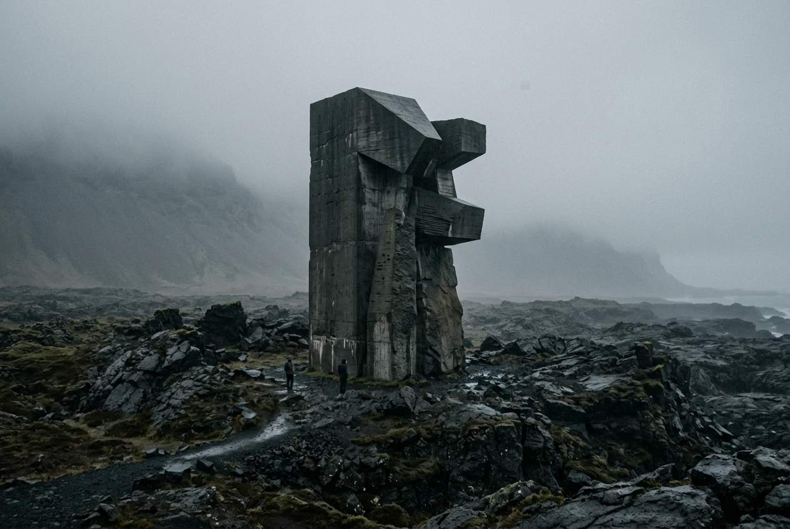
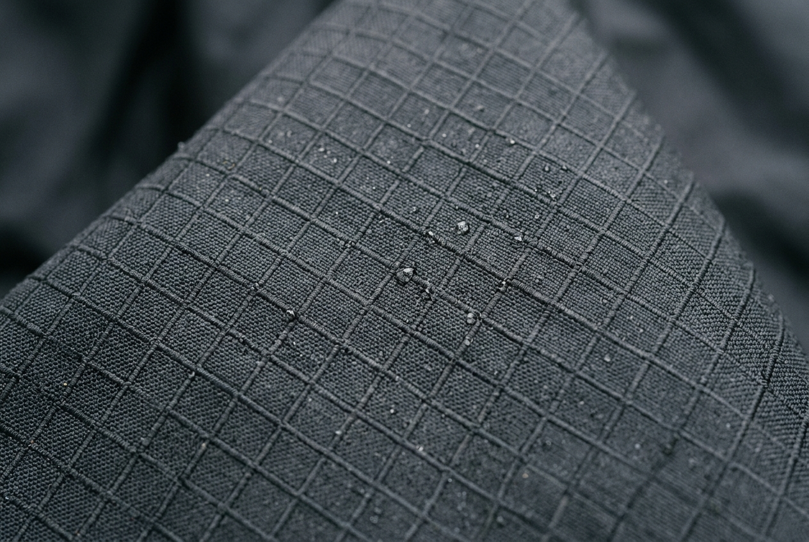
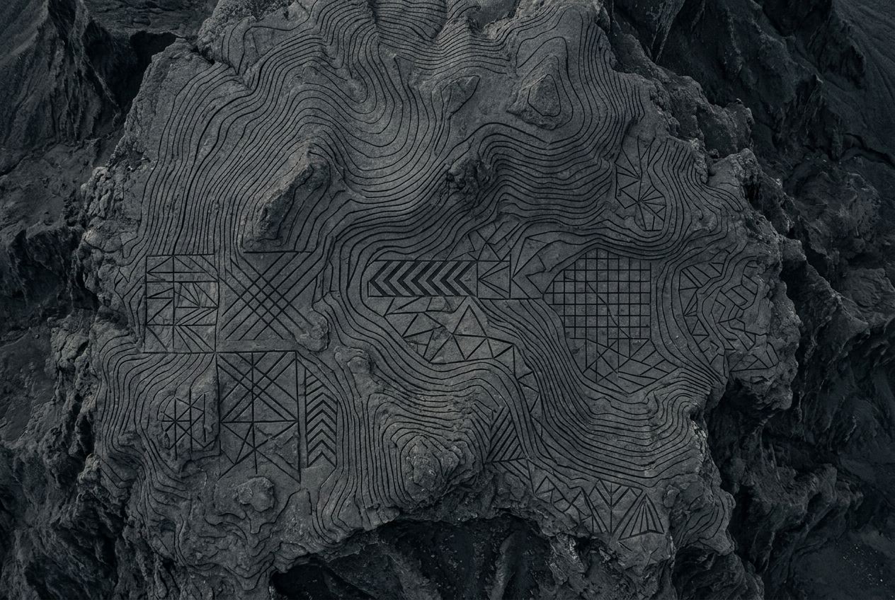

A luxury artistic project mapping the silent dialogue between high-altitude topography, brutalist geometries, and raw environmental elements. Designed as structural tools for mental elevation.
A physical manifestation of landscape coordinates. Architectural objects placed on volcanic peaks and harsh mountain ridges.

A 4-meter brutalist basalt block erected on the mountain ridge. A marker reflecting local tectonic tension and geological silence.

An exploration of technical grid structures. Analyzing high-altitude resistance and thermal shielding through abstract patterns.

Symmetrical coordinate systems carved into mountain slopes. A spatial intervention linking satellite elevation data to physical tactile stone.
The structural code behind the Altar° project. Measuring materials, environments, and precise elevation tools.
Altar° sees elevation as both a physical and conceptual process. We design objects not as decoration, but as tools that test the limits of structural stability and endurance. Our designs adapt to freezing temperatures, volcanic wind speeds, and severe tectonic shifts.
Elevation 3,200m — Where body and stone achieve perfect stillness.